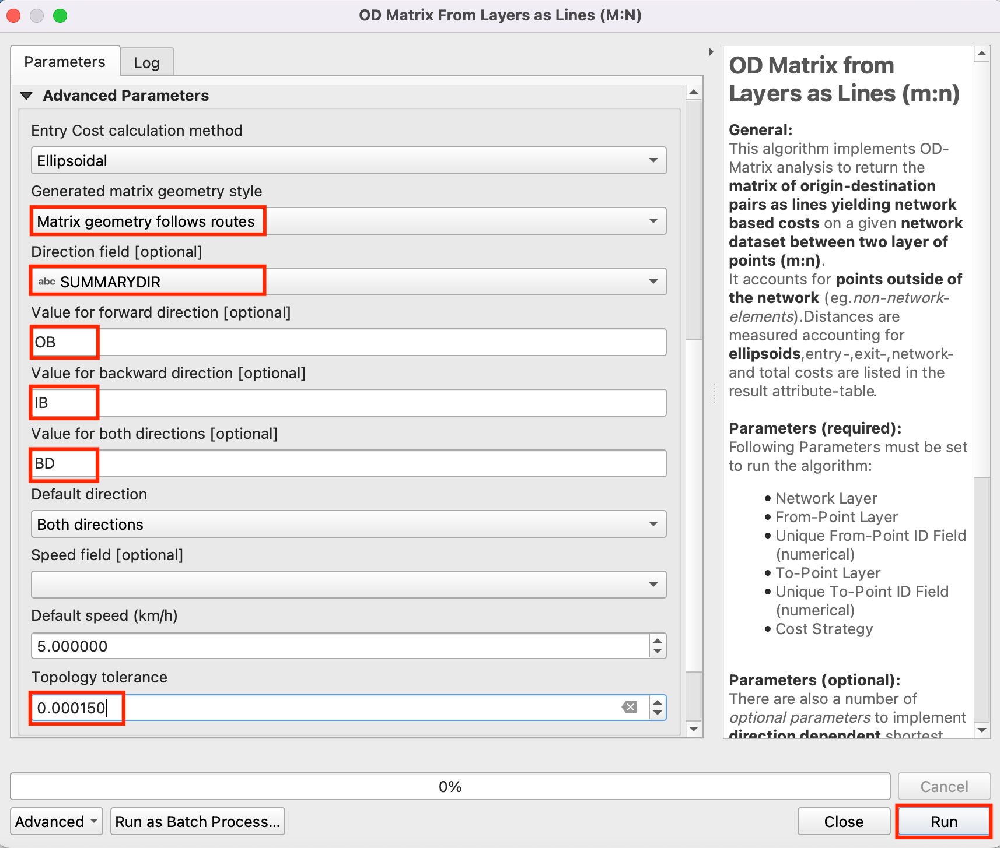

Lokalisierung der nächstgelegenen Einrichtung mit einer Quelle-Ziel-Matrix (QGIS3)¶
Im vorhergehenden Tutorial Einfache Netzwerkvisualisierung und Routing (QGIS3) lernten wir, wie man ein Netzwerk erstellt und die kürzeste Verbindung zwischen 2 Punkten bestimmt. Wir können diese Technik auf viele verschiedene Arten netzwerkbasierter Analysen anwenden. Eine dieser Anwendungen ist die Berechnung einer Quelle-Ziel-Matrix oder QZ-Matrix. Angenommen, wir haben eine Menge an Quell-Punkten und eine Menge an Ziel-Punkten, dann können wir für jedes Quelle-Ziel-Paar die kürzeste oder schnellste Verbindung ermitteln. So eine Analyse ist sinnvoll, um die nächstgelegene Einrichtung zu jedem gegeben Punkt zu finden. Eine Logistikfirma kann diese Analyse z. B. nutzen, um das nächstgelegende Lager zu ihren Kunden zu bestimmen und so die Lieferrouten optimieren. Wir verwenden hier den Distanzmatrix-Algorithmus aus dem Plugin QGIS Network Analysis Toolbox (QNEAT3), um die nächstgelegene Gesundheitseinrichtung zu jeder Adresse in der Stadt zu bestimmen.
Bemerkung
Dieses Tutorial zeigt, wie man eigene Netzwerkdaten zur Erstellung einer Quelle-Ziel-Matrix verwenden kann. Wenn man keine eigene Netzwerkdaten hat, kann man das ORS Tools Plugin verwenden. Die Analyse erfolgt dann mit Daten von OpenStreetMap mit dem Werkzeug . Unter Einzugsgebietsanalyse mit dem Openrouteservice (QGIS3) findet man weitere Informationen zur Verwendung des Plugins.
Überblick über die Aufgabe¶
Wir werden 2 Layer für Washington DC verwenden - einen Layer mit Punkten für Adressen und einen anderen Layer mit Punkten für psychosoziale Einrichtungen. Wir werden dann die Einrichtung mit dem kürzesten Weg zu jeder Adresse ermitteln.
Weitere Fähigkeiten, die wir erlernen¶
Gewinnung einer Zufallsstichprobe aus einem Punktlayer
Nutzung von virtuellen Layern, um eine SQL-Abfrage auf einem QGIS-Layer auszuführen
Beschaffung der Daten¶
Die Regierung des Distrikts Columbia stellt hunderte Datensätze frei zur Verfügung: Open Data Catalog.
Wir laden die folgenden Datenlayer als Shape-Dateien herunter.
Der Einfachheit halber können wir eine Kopie der Datensätze unter folgenden Links herunterladen:
Community Based Service Provider.zip
Datenquelle: [DCOPENDATA]
Konfiguration¶
Wir wählen . Dort suchen wir in Bereich :guilabel:` Alle` nach dem Plugin QNEAT3 und installieren es. Anschließend betätigen wir die Schaltfläche Schließen.

Arbeitsablauf¶
Wir suchen die heruntergeladene Datei
Community_Based_Service_Providers.zipim Browser, erweitern sie und fügenCommunity_Based_Service_Providers.shpzum Arbeitsbereich hinzu. Wir werden nur die Gesundheitszentren für Erwachsene verwenden. Also öffnen wir per Rechtsklick das Kontextmenü des Layers und wählen Filter….

Das Dialogfenster Abfrageerstellung wird geöffnet. Wir geben den folgenden Ausdruck in :guilabel:` Datenanbieterspezifischer Filterausdruck` ein und bestätigen mit OK.
"PROVIDER_T" IN ('Adult','Adult & Child')
Als nächstes suchen wir die Datei
Roadway_Block.zip, erweitern sie und fügenRoadway_Block.shpzum Arbeitsbereich hinzu. Auch mit der DateiAddress_Points.zipverfahren wir so und fügenAddress_Points.shphinzu. In der Stadt werden sehr viele Punkte angezeigt. Jeder davon repräsentiert eine gültige Adresse. Wir werden 1000 Punkte zufällig auswählen. Dieses Vorgehen wird Zufallsstichprobe genannt. Wir wählen .

Wir suchen nach dem Algorithmus und öffnen ihn per Doppelklick.
Wir wählen
Address_Pointsals Eingabelayer,Anzahl gewählter Objekteals Methode und geben1000in Anzahl/Prozentsatz gewählter Objekte ein. Neben Extrahiert (zufällig geschichtet) betätigen wir die Schaltfläche...und wählen In Datei speichern…. Hier wählen wir das Verzeichnis undaddress_point_subset.shpals Dateiamen. Wir betätigen die Schaltfläche Starte.

Bemerkung
Der Algorithmus wählt zufällig 1000 Punkte aus dem Datensatz aus. Um genau dieselben Punkte wie beim Erstellen dieses Tutorials zu verwenden, kann das Ergebnis auch hier heruntergeladen werden: address_point_subset.zip . Nach dem Download muss noch der Layer address_point_subset.shp in QGIS geladen werden.
Ein neuer Layer
address_point_subsetwird zum Layer-Panel hinzugefügt. Die Sichtbarkeit des LayersAddress_Pointskann abgeschaltet werden. Wir wollen den neuen Layer inorigin_pointsumbenennen. Per Rechtsklick öffnen wir das Kontextmenü und wählen Layer umbenennen.

Ebenso bennen wir den Layer
Community_Based_Service_Provider, der die Gesundheitszentren repräsentiert, indestination_pointsum. Die Benennung der Layer auf diese Weise erleichtert ihre Identifikation in den weiteren Verarbeitungsschritten. Anschließend öffnen wir die Verarbeitungswerkzeuge, um aus dem Quell- und dem Ziel-Layer eine Distanzmatrix zu generieren.

Wir suchen nach dem Algorithmus . Wenn der Algorithmus nicht zu finden ist, sollte sichergestellt sein, dass das Plugin QNEAT3 installiert wurde.

Der Algorithmus ermittelt die Distanzen zwischen dem Quell- und dem Ziellayer entlang eines Netzwerkes. Wir wählen
Roadway_Blockals Network Layer,origin_pointsals From-Point Layer undOBJECTIDals Unique Point ID Field. Analog setzen wirdestination_pointsals To-Point Layer undOBJECTIDals Unique Point ID Field. Wir stellen Optimization Criterion aufShortest Path (distance optimization).

Da es in dem Netzwerk viele Einbahnstraßen gibt, müssen wir den Abschnitt Fortgeschrittene Parameter erweitern, um die Richtung zu spezifizieren. Die Dokumentation Einfache Netzwerkvisualisierung und Routing (QGIS3) enthält weitere Details über die Gliederung dieser Attribute. Es gibt auch eine Option, den Geometriestil der erzeugten Matrix zu wählen. Da wir ein Straßennetz mit einer Richtungsinformation haben, können wir die Matrix durch Routenverfolgung generieren. Wir wählen
Matrix geometry follows routes. Wir wählenSUMMARYDIRals Direction field. Wir gebenOBals Value for the forward direction,IBals Value for backward direction undBDals Value for both directions ein. Die Topology tolerance setzen wir auf0.0000150. Die anderen Optionen belassen wir bei den Voreinstellungen und betätigen die Schaltfläche Starte.

Ein neue Tabelle
Output OD Matrixwird nun im Layer Bereich angezeigt. Wir öffnen mit einem Rechtsklick das Kontextmenü und wählen Attributtabelle öffnen. Die Tabelle enthält 67000 Zeilen. Wir hatten 67 Startpunkte und 1000 Zielpunkte ‒ die Ausgabe enthält daher 67 x 1000 = 67000 Quelle-Ziel-Paare. Das Attributtotal_costenthält die Distanz in Metern von jedem Start- zu jedem Zielpunkt.

Im Rahmen dieses Tutorials interessiert uns nur der Zielpunkt mit der kürzesten Entfernung. Wir erstellen eine SQL-Abfrage zur Selektion des geringsten
total_costaller Ziele. Wir wählen .

Im Bereich Datenanbieter wählen wir Virtuelle Layer -> Projektlayer -> Output OD Matrix. Nun betätigen wir die Schaltfläche SQL-Fenster in der Menüzeile des Dialogfensters DB-Verwaltung. Es wird ein Tab Abfrage (Projektlayer) geöffnet. In das Bearbeitungsfeld geben wir den folgenden Ausdruck ein; ggf. muss
input1durch"Output OD Matrix"ersetzt werden. Wir setzen die Option Als neuen Layer laden und geben im sich öffnenden Bereichgeometryals the Geometriespalte sowiesql_outputals Layername an. Wir betätigen die Schaltfläche Laden.
select origin_id, destination_id, min(total_cost) as shortest_distance, geometry from input1 group by origin_id
Dem Layer-Panel wird ein neuer Layer
sql_outputhinzugefügt. Dieser Layer enthält das Ergebnis unserer Analyse: das nächstgelegene Gesundheitszentrum für jeden der 1000 zufällig ausgewählten Punkte.

If you want to give feedback or share your experience with this tutorial, please comment below. (requires GitHub account)